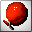
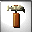
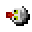
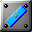

BALLOONSprick 'n' puzzlealpha version 0.1.8-3 - Aug 6, 2007
©1993-2007 by M. und R. Lagarden
published under the GPL
Content
I. the game
- BALLOONS introduces itself
- getting started
- the main menu
- starting to play
- main keys when playing
II. items and elements
- this may be useful for you ...
- this might be bad for you ...
- this could be nasty ...
III.system requirements
I. the game
1. BALLOONS introduces itself
BALLOONS has got 99 level which can consist of one or up to eighteen screens.
BALLOONS has a little bit of SOKOBAN, a nice portion OXYD™ und a lot of BALLOONS!
There will be mazes, tricky stuff, time based level, and you can be taken for a ride either!
BALLOONS intends to make you laugh, to stress you, and to make you pore.
The landscapes of BALLOONS come with miscellaneous elements. Some walls that might look inconspicuous, may offer unimagined features: they might be moveable, destroyable (listen to the sound...), or you can walk right through them.
The aim of the game is to collect a certain number of coins and to go searching the exit to the next landscape.
These landscape don't just contain the usual obstacles like walls, abysses and various enemies, but there is also a bunch of balloons containing most of the coins to be found.
2. getting started
BALLOONS is available as binaries and source distribution for windows or linux-like operation systems:
After unpacking the sources, you will have to compile it on a shell using ./configure && make.
(Installing it won't work properly)
The binary will be started by executing ./balloons (POSIX) or balloons.exe (Windows).
This will start BALLOONS in windowed mode.
When the Intro finishes, you'll find yourself in the main menu.
3. the main menu
These keys lead to the following actions:
- F2: starts a new game beginning from level one with three lives.
- F3: swaps between one or two player mode. In two player mode, each player acts until he has solved his current level.
- F4: lets you enter a level code, so you can (re)start from the level you finished the last time.
- F6: lets you choose between the english, german french or dutch language (will be released in a later version...).
- F7: a short version of this instruction will then be displayed. Any key swaps to the next page, ESC brings you back to the main menu.
- F8: the top ten high score list will be displayed.
- F9: a selection of level is shown. ESC brings you back to the main menu.
- F10: quits BALLOONS.
when typing in level codes or high score entries, the following keys are useful:
- RETURN or ENTER to finish the input.
- ESC to cancel.
- BACKSPACE to delete the last character.
4. starting to play
The game menu will be shown after the level number has been displayed.
The content of the game menu (as shown from left to right):
- the inventory contains everything you carry with you: your remaining number of lives and collected items like hammers, tiles, keys. Up to eight are visible. The item between the two marks on the left lies in your hand. You can act with it as desribed in the items and elements section. Using the CTRL key lets you swap its position.
- Euros: every pricked balloon and of course the coins make you earn money on the score. So maybe at the end of the game, you'll join the high score table. But when playing in two player mode, only the better one wins and will be asked to sign in!
- Items: The number of coins left to be collected ist shown right here. If it reaches zero, the exit to the next level will appear.
- time: this clock counts down in time limited level. When the time passes before the exit is reached, one life will be lost and the level restarts.
5. main keys when playing
The actor can be moved in any direction using the cursor keys. Action like pricking balloons, hammering or placing tiles require the assistance of the SPACE bar (Support for joysticks is planed...).
- ESC: cancel the actual game. Brings you back to the main menu.
- F2: restart the actual level at the loss of one live. When getting stuck, this may be the right key to be pressed...
- Pause: the game will be paused and the screen will be hidden. Pressing any key will continue the game.
- CTRL: swaps items in the inventory.
II. items and elements
1. this may be useful for you ...

balloons have to be pricked, then they will show coins or items hidden in them.
 these euro coins have to be collected. When the item counter in the game menu comes to zero, the exit will appear on his position. Go and reach out for it!
these euro coins have to be collected. When the item counter in the game menu comes to zero, the exit will appear on his position. Go and reach out for it!

the hammer lets you destroy certain walls.
 keys can open stones with key holes. Each key can be used for one door only (f.e. the first that comes along).
keys can open stones with key holes. Each key can be used for one door only (f.e. the first that comes along).
tiles can be placed over abysses. They will grow to a stable ground plate so you can walk over it.
 the stillage is not only movable, it can close abysses just like the tiles.
the stillage is not only movable, it can close abysses just like the tiles.
 in time limited level you'll get 15 seconds in reserve, otherwise 15 cents.
in time limited level you'll get 15 seconds in reserve, otherwise 15 cents.

A new live extends the fun to play!
this will show the code to the currently played level. Write it down, so you can restart this level when rejoining the game.
 this looks like a bus stop?!?! Once you've reached this point and you loose a life (f.e. bij a lightning),
this will be your new starting point.
this looks like a bus stop?!?! Once you've reached this point and you loose a life (f.e. bij a lightning),
this will be your new starting point.
this beamer transports you to another place.
 switches may have different functions: some make stones vanish, some just swap stones. They even can run a
switches may have different functions: some make stones vanish, some just swap stones. They even can run a
thrower. His balls can even destroy walls. To make them reach their goal, there are

shields. They can be turned to all directions and they can be movable, too!
 The bomb: fire it and watch out! The floor might get fired and turn into an abyss and
surrounding destroyable walls will eventually open new ways.
The bomb: fire it and watch out! The floor might get fired and turn into an abyss and
surrounding destroyable walls will eventually open new ways.
 the snowflake uses magic: It make money out of enemies!
the snowflake uses magic: It make money out of enemies!
 If you move this open stone on a blinking place, ways can be opened (or closed).
If you move this open stone on a blinking place, ways can be opened (or closed).
2. this might be bad for you ...
lightnings and their correspionding stone cost you a life when touching them.
X X X Aliens are almost there where your way leads you to. Both of you will die when colliding.
 cracks in the floor can grow worse when remaining too long on them. At least they end up in an abyss!
cracks in the floor can grow worse when remaining too long on them. At least they end up in an abyss!
3. this could be nasty ...
Arrows only allow movement in one direction.
Here, you are not allowed to walk through. But be careful, your enemies are!
sliding doors are almost nasty. They can squeeze you, when you miss the right moment to pass them!
III. system requirements
- Windows 9x,XP,Vista or POSIX bases operation system, with sound card and graphics with 640x480 pixels in true color.
- SDL >= 1.2.0, SDL_image, SDL_ttf >= 2.0.6 , SDL_mixer >= 1.2.5
|